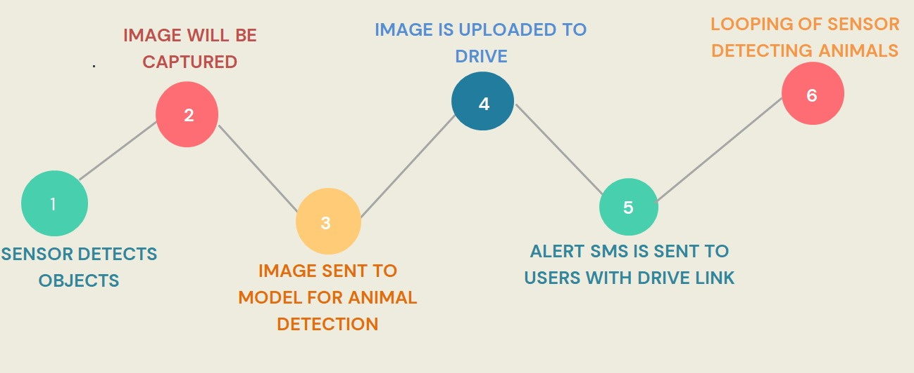

Project Overview
This project implements a real-time wildlife detection system that combines a Raspberry Pi 4, USB camera, and ultrasonic sensor to detect nearby animals, classify them using a CNN, and notify users immediately with the captured image and a Drive link.
- Built a real-time wildlife monitoring system using a Raspberry Pi 4, USB camera, and ultrasonic sensor.
- Used a VGG19-based CNN to classify animals across 32 species with around 92% accuracy.
- Uploaded detected images to Google Drive and sent SMS alerts with the Drive link through the SMSChef API.